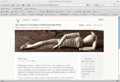

In 2009, I took an advanced Web-design class and learned how to use Adobe Flash. I made five projects using everything from graphics I created to photos I took, and I also used flash and video while interning at Eating Well in Vermont.

I have been taking photos since I was a sophomore in high school. I started out on a 35mm camera, so many of those photos aren't on my site. These are a bunch of slideshows that I'm constantly updating with photos.

This page is for the websites I have created or worked on. Some I built from scratch and others I was an intern for.